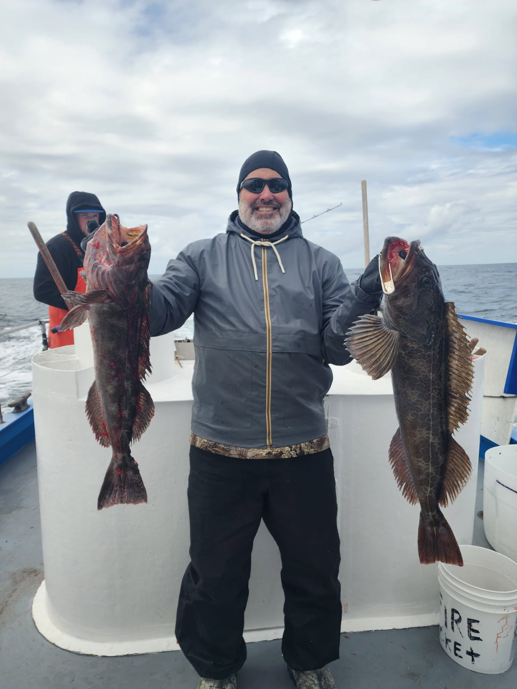
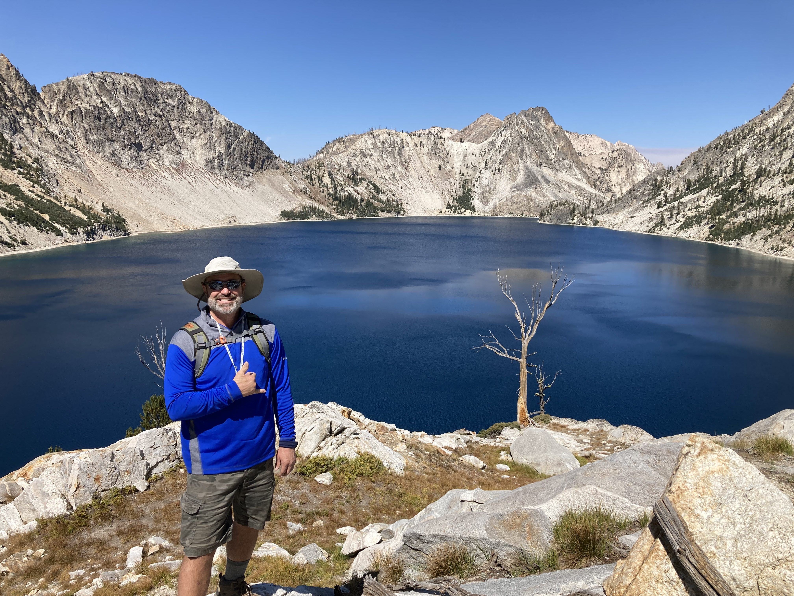
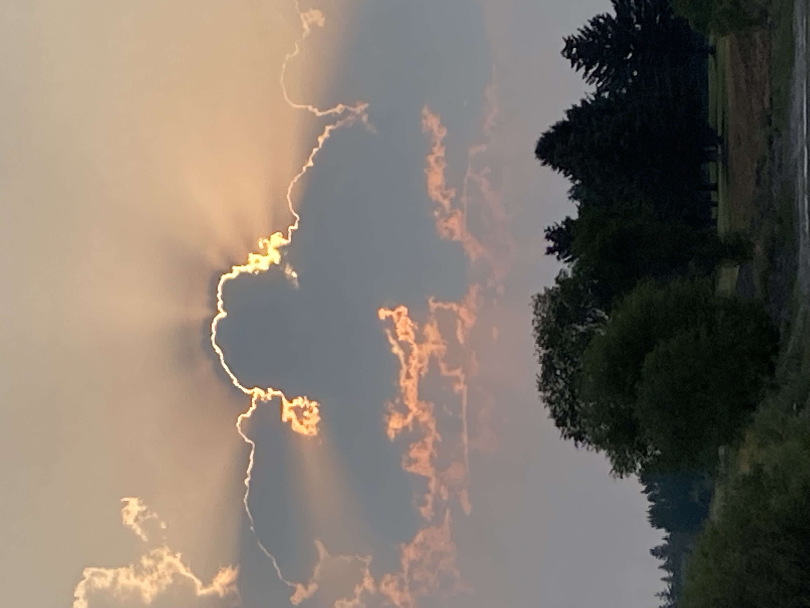
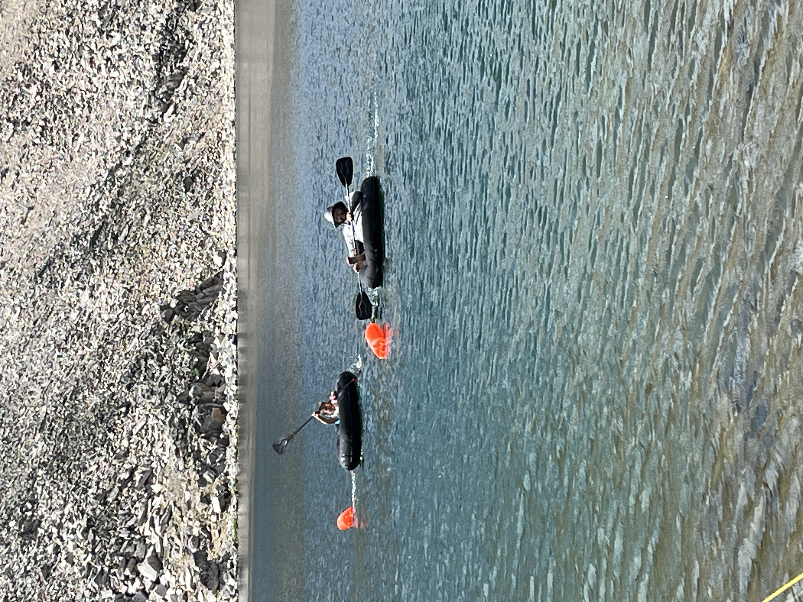
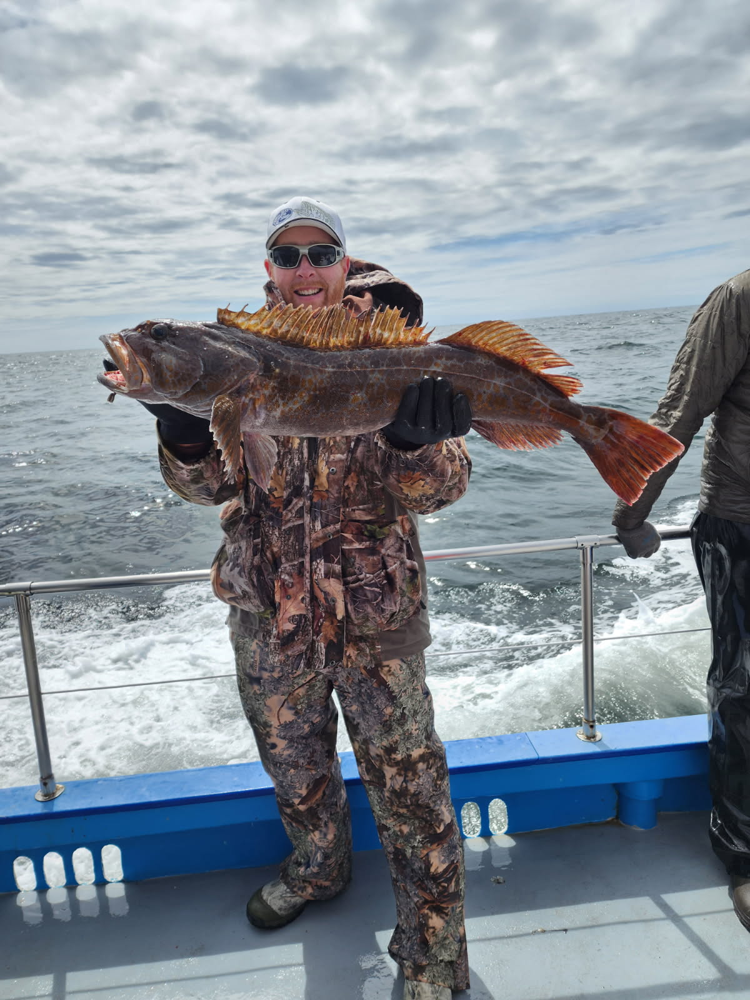
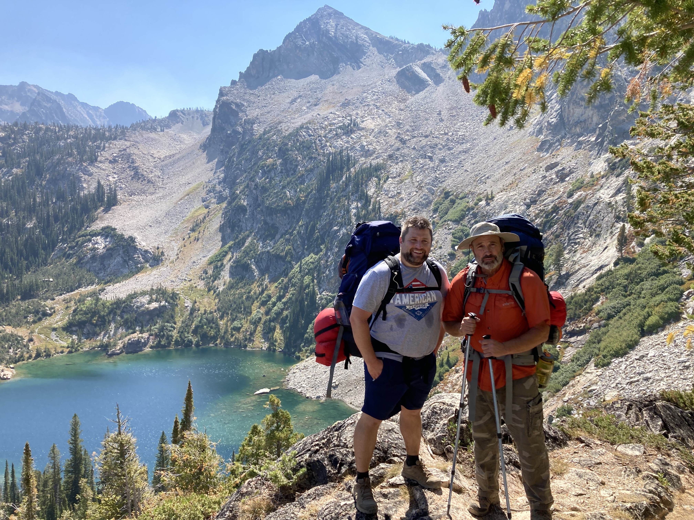
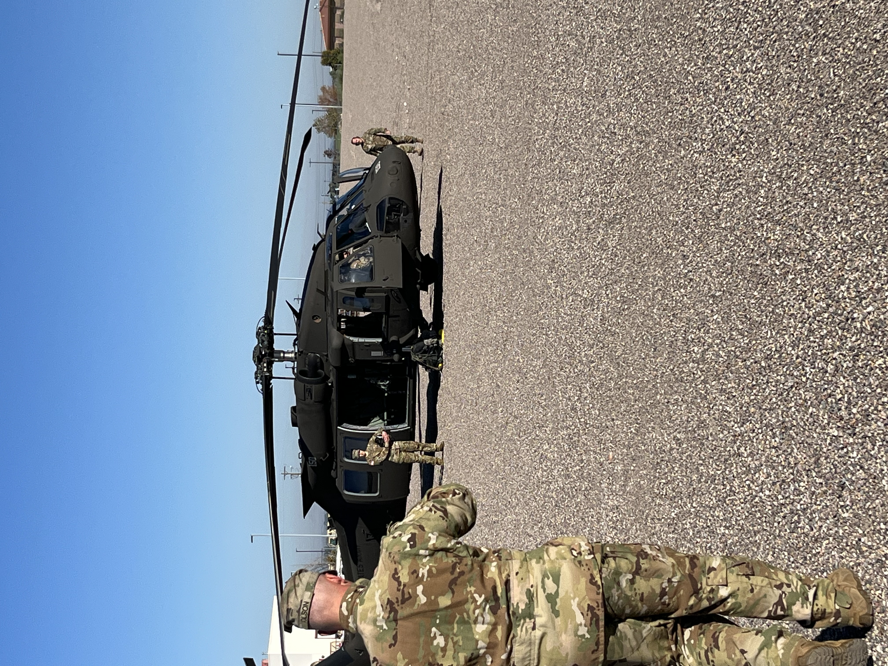

David J. Bunnell is not your typical author. Before he ever wrote a word of fiction he spent nearly four years living and working inside a massive fully operational mortuary. Newly married and far from home, he and his wife moved to a new city for college and took an opportunity that most people would have walked away from. He carried bodies through maze like corridors in the middle of the night. He witnessed underground mine disaster victims come through the mortuary load-out area and watched families filter in to identify their fathers and sons by their teeth while they lay covered with a sheet on the concrete floor. He became intimately familiar with the phrase body run. And somewhere inside all of that silence and weight, a writer was born.
For two and a half years during that stretch, David commuted back and forth by bus. It was on those long rides, alone with his thoughts, that he first started to believe he might actually have a novel in him.
He does not write from imagination. He writes from a life fully lived.
Years later David wrote his first novel in thirty days. Not in a quiet study or a dedicated writing space but in a 32 square foot furnace room in his basement while his children ran and laughed overhead. He had to stop more than once. Not because he lost his train of thought. But because the story he was telling was that real.
He finished the book in a month. Then he carried it for twenty seven years.
Today David is the author of three books. The Winds, a literary psychological thriller set in the Wind River Mountains of Wyoming about a man haunted by an unforgivable loss. Body Run, a raw serial killer thriller drawn directly from his mortuary years. And Touchdown Jesus, a coming of age football story rooted in his own real experiences of bullying, courage, and starting over in a new town.
The Wind River Mountains are not just a backdrop for David, they are personal ground, and the same rugged, unforgiving beauty that shapes The Winds shaped him. Read more about Lander and the Wind River Mountains.
He is also the Plant Manager of a unique cheese manufacturing facility in Idaho, a lifelong athlete who played college football, and a man who has passed nearly ten kidney stones, survived a heart attack, and still shows up to work every single day. And for the record, English was the one class that ever gave him trouble in high school, a single B on an otherwise clean transcript, which makes the idea of him becoming an author all the more unlikely.
David Bunnell does not write from imagination. He writes from a life fully lived. And that is exactly what makes every page impossible to put down.
Curious how three finished manuscripts sat waiting for nearly three decades before any of this reached a shelf? Read the story behind the story.
A glimpse into the world David writes from






